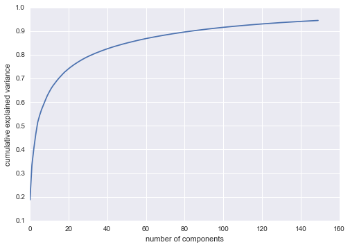

#
Python

Python is a dynamically typed programming language designed by Guido van Rossum. Much like the programming language Ruby, Python was designed to be easily read by programmers. Because of its large following and many libraries, Python can be implemented and used to do anything from webpages to scientific research.
Here are 137,549 public repositories matching this topic...
-
Updated
Mar 29, 2020 - Java
njacharya
commented
Aug 16, 2019
A description is incomplete. It should mention:
These patterns are not competing, but complementing each other. To achieve availability, one needs both fail-over and replication.
right after
"There are two main patterns to support high availability: fail-over and replication. "
A curated list of awesome Python frameworks, libraries, software and resources
-
Updated
Mar 30, 2020 - Python
Vasuji
commented
Dec 5, 2019
There are some interesting algorithms in simulation from Physics, Chemistry, and Engineering especially regarding Monte Carlo simulation: Heat Bath algorithm, Metro-Police algorithm, Markov Chain Monte Carlo, etc.
jitendra3109
commented
May 6, 2017
Huge and nice collection and also getting very much appreciated from the community.
It would be great if somebody can translate into English then it will be reaching out to global.
jaredgoodman03
commented
Oct 6, 2019
pgkrit
commented
Mar 4, 2020
I pulled the latest version of flask Flask from the master branch, commit 64ba43411fbfb2e435455b0df2453d7809b7c5a8.
The Quickstart minimal example on the dev version of Flask does not run as intended. Previous versions of the Quickstart example would display a simple "Hello world" message, but the addition of an undefined "name" variable causes the example to fail with a NameError.
It seems
Volker-Weissmann
commented
Mar 21, 2020
In the documentation it says:
Turns positive integers (indexes) into dense vectors of fixed size. eg. [[4], [20]] -> [[0.25, 0.1], [0.6, -0.2]]
Neither this explanation nor this example is very clear. I would suggest replacing this with
Turns positive integers (indexes) into dense vectors of fixed size. eg. [[4], [20]] -> [[0.25, 0.1], [0.6, -0.2]]
nhooey
commented
Mar 6, 2020
It's not clear from the website's documentation, or the --help output, how to do the following equivalent curl task:
Post a raw JSON query to ElasticSearch:
curl \
--header "Content-Type: application/json" \
--request POST \
--data '{ "_source": [ "restricted_countries.*" ], "query": { "match_all": {} }, "size": 1000 }' \
'http://localhost:9200/_search'
T
samccann
commented
Feb 12, 2020
We're trying to fix as many broken links as possible before modules move into collections. This is the batch of broken links on some Ansible modules.
NOTE: the link checker sometimes reports an error where a link actually works. Ignore those if you find them.
ISSUE TYPE
- Documentation Report
COMPONENT NAME
psiyan
commented
Feb 28, 2020
When using the url http://docs.python-requests.org/en/latest/, it redirects to https://2.python-requests.org//en/latest/ (notice the extra / before en). This causes a HTTP 404.
Expected Result
The redirect should be to https://2.python-requests.org/en/latest/
Actual Result
HTTP 404
Reproduction Steps
Try to visit the latest en documentation for requests using the
albertcthomas
commented
Mar 2, 2020
Calling score_samples with a non fitted KernelDensity object returns a non helpful error message.
anjali411
commented
Mar 6, 2020
Similar to https://github.com/pytorch/pytorch/pull/34037/files we can view a complex tensor as a float tensor and pass it to uniform_ used by rand
seilgu
commented
Sep 19, 2019
trainable_variables = weights.values() + biases.values() doesn't work.
Also if I write trainable_variables = list(weights.values()) + list(biases.values()), I have to turn on tf.enable_eager_execution(), but the training result is wrong, accuracy is ar
wRAR
commented
Mar 18, 2020
https://twisted.readthedocs.io/en/latest/core/howto/defer-intro.html#inline-callbacks-using-yield says "On Python 3, instead of writing returnValue(json.loads(responseBody)) you can instead write return json.loads(responseBody). This can be a significant readability advantage, but unfortunately if you need compatibility with Python 2, this isn’t an option.".
balloob
commented
Mar 28, 2020
We have just merged #33312 which makes sure that a test fails if it has uncaught exceptions while it was running. This was not considered a failure before.
We had to ignore several existing tests that had uncaught exceptions. This included some tests of the default_config integration. These tests will need to be fixed.
The ignored tests can be found [here](https://github.com/home-assistant/core/
biko-the-bird
commented
Jul 7, 2018
The chat tutorial listed for elixir is outdated. It uses a old version of phoenix and could be confusing to new users who would be learning a oudated set of syntax, application structure, commands i.e. mix phoenix.create vs. mix phx.create.
Also it's missing some steps. For one this they never do mix ecto.create without which the postgres database is not initialized so the app doesn't wo
azl397985856
commented
Mar 23, 2020
对于数组[1, 2, 3, 4] 和 [4, 3, 2, 1] 你的冒泡排序算法是否都能获得不错的效率？
-
Updated
Mar 30, 2020 - Python
awaiskaleem
commented
Oct 10, 2019
Target Leakage in mentioned steps in Data Preprocessing. Train/test split needs to be before missing value imputation. Else you will have a bias in test/eval/serve.
1
bmw
commented
Mar 17, 2020
In the past we've talked about trying to keep the list of systems we test on relatively current I still think there's some value in that.
If the tests don't immediately work, especially due to failures in certbot-auto, I think it probably makes sense to close/kick this issue until we've done some combination of deprecate certbot-auto and rewrite the test farm tests.
gyermolenko
commented
Feb 7, 2019
I think listing anti-patterns with some basic reasoning about "why not" is a good idea.
Example - singleton. Although #256 has "won't fix" label
- it is in PRs section, and people (if searching history at all) are searching issues first.
- it was misspelled, Singelton instead of Singleton, therefore impossible to find
Listing most popular anti-patterns (without actual implementation) shou
10
quangngd
commented
Mar 24, 2020
Code Sample, a copy-pastable example if possible
# Your code here
from pandas import Timestamp
Timestamp.min.tz_localize("Asia/Tokyo")The example is picked directly from
pandas/tests/scalar/timestamp/test_timezones.py::TestTimestampTZOperations::test_tz_localize_pushes_out_of_bounds
Problem description
Error message is empty.
yep, out of scope. but i
AiLearning: 机器学习 - MachineLearning - ML、深度学习 - DeepLearning - DL、自然语言处理 NLP
python
nlp
svm
scikit-learn
sklearn
regression
logistic
dnn
lstm
pca
rnn
deeplearning
kmeans
adaboost
apriori
fp-growth
svd
naivebayes
mahchine-leaning
recommendedsystem
-
Updated
Mar 20, 2020 - Python
-
Updated
Mar 30, 2020 - Jupyter Notebook
ja-ox
commented
Mar 5, 2019
In the PCA section there is the following quote:

We see that these 150 components account for just over 90% of the variance.
While not inaccurate (150 componen
Created by Guido van Rossum
Released February 20, 1991
- Organization
- python
- Website
- www.python.org
- Wikipedia
- Wikipedia
Please make sure that this is a feature request. As per our GitHub Policy, we only address code/doc bugs, performance issues, feature requests and build/installation issues on GitHub. tag:feature_template
System information